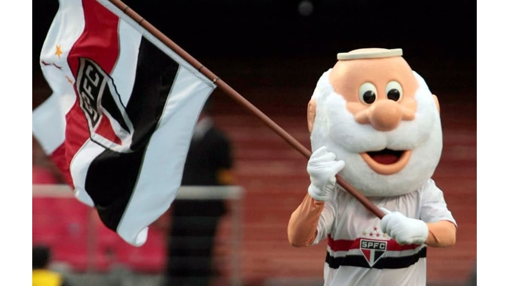

São Paulo Futebol Clube
O São Paulo Futebol Clube, mais conhecido como São Paulo FC ou simplesmente São Paulo, é um clube poliesportivo brasileiro da cidade de São Paulo, capital do estado homônimo. Foi fundado em 25 de janeiro de 1930, tendo interrompido suas atividades em maio de 1935, e as retomado em dezembro do mesmo ano.
Mascote
Até hoje o São Paulo Futebol Clube teve apenas uma mascote, que ficou marcada em sua história. Criada na década de 1940 por um cartunista do jornal A Gazeta Esportiva, a imagem do santo agradou a todos os são-paulinos, permanecendo até hoje como mascote oficial do clube.[41] Pelo fato do verdadeiro São Paulo ter morrido com aproximadamente 60 anos, é representada por um velhinho de barba branca.[44] É chamada de "Santo" Paulo para não confundir com o nome do clube.
Hino
O hino do São Paulo Futebol Clube (composto por Porfírio da Paz em 1935 e oficializado em 1942) passou por diversas alterações até chegar à atual estrutura.[46] A criação do hino foi um tanto atípica e comovente. Porfírio da Paz em 1935, à época tenente da Força Pública e farmacêutico, acabara de ser informado que perderia sua casa por falta de pagamento, e por conta do nervosismo, cantarolava uma canção entoando o nome do clube do qual era apaixonado. Mais tarde e mais calmo, pôs no papel a letra que viria a ser o hino do São Paulo Futebol Clube.
Centro de Treinamento
Inaugurado em 9 de abril de 1988, o Centro de Concentração e Treinamento Frederico Antônio Germano Menzen, mais conhecido como CCT da Barra Funda ou ainda CT Barra Funda, surgiu como uma necessidade de acomodar melhor os atletas da categoria principal do São Paulo, uma vez que o Estádio do Morumbi, com a modernização do esporte e apesar de confortável, não oferecia tudo o que o time necessitava.[88] Localizado na Avenida Marquês de São Vicente, no bairro da Barra Funda, zona oeste da capital paulista, o Centro de Treinamento tem esse nome em homenagem ao sócio número um do clube e presidente, o ilustre Frederico Antonio Germano Menzen.[88] Com uma infraestrutura de alto nível e à frente dos outros clubes brasileiros,[89] as instalações contam com três campos oficiais, um minicampo, um campo para treinamento de goleiros, arquibancada para 4 mil pessoas, dois vestiários para jogadores, dois vestiários para árbitros, alojamentos, cozinha, refeitório, dezesseis dormitórios, sala de jogos, sala de audiovisual, área administrativa, área exclusiva para atendimento à imprensa, departamento médico e o REFFIS.
Centro de Formação de Atletas
O Centro de Formação de Atletas Presidente Laudo Natel, também conhecido como CFA de Cotia, CT de Cotia ou simplesmente como CFA, localiza-se na região de Cotia, região Metropolitana de São Paulo, a cerca de trinta minutos de carro do Estádio do Morumbi.[91] Em menos de uma década de existência, o Centro de Formação de Atletas Presidente Laudo Natel já revelou, entre outros, nomes como Breno, Hernanes, Jean, Oscar, Casemiro, Lucas Piazón, Lucas Moura e Rodrigo Caio.